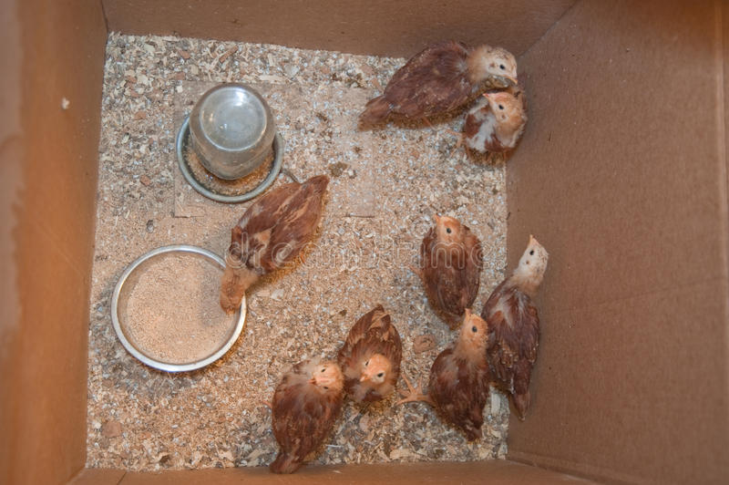

Alimentation des poules
À chaque âge son alimentation.
La poule adulte
Deux repas par jour sont recommandés.
La méthode traditionnelle consiste à donner des céréales (blé, orge, maïs), mais il est indispensable de posséder un grand espace pour que la poule puisse trouver un complément d'alimentation (herbes, insectes, vers) et de lui donner de temps en temps des vitamines et oligo-éléments.
Une autre méthode consiste à donner des aliments du commerce : aliment poulette, finition, pondeuses.
Il est également possible de mélanger les deux méthodes.
En complément de la nourriture, il ne faut pas oublier de donner à la poule de l'eau propre, fraîche et renouvelée très régulièrement.
Le poussin
Le 1er jour, le poussin se nourrit des réserves qu'il a effectuées durant son développement dans l'œuf.
Le 2ème jour, le poussin devra être nourri avec du maïs concassé, du jaune d'œuf et du lait.
Au cours de la première semaine, il faut rajouter progressivement des verdures hachées.
Durant la deuxième semaine, le poussin mangera des graines germées (avoine) et un peu d'huile de foie de morue, ce qui lui fera le plus grand bien.
Au-delà de 15 jours à 3 semaines, les poussins pourront suivre leurs mères et ainsi manger comme les poules adultes.
Pour nourrir le poussin, vous pourrez également trouver des aliments émiettés dans le commerce.
